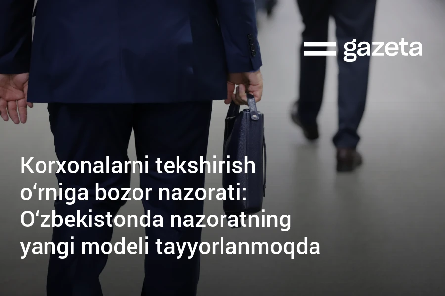

"Davlat nazoratidan bozor nazoratigacha :"
O'zbekistonda sanoatni tartibga solish tizimi "davlat nazorati"dan "bozor nazorati"ga o'tish bosqichiga kirdi.
O‘zbekistonda sanoatni tartibga solish tizimi «davlat nazorati»dan «bozor nazorati»ga o‘tish bosqichiga kirdi. Bozor iqtisodiyoti bo‘lsa-da, mavjud ijtimoiy-huquqiy munosabatlarga davlatning aralashuvini butunlay cheklash imkonsiz. Chunki zamonaviy tizimlar aralash modelga tayangan holda bozor va davlat qoidalarini uyg‘unlashtiradi.Xuddi shunday, davlatimiz rahbarining 2025-yil 26-dekabr sanasidagi Oliy Majlis va O‘zbekiston xalqiga Murojaatnomasida ham «Davlat nazorati» tizimidan xalqaro «Bozor nazorati» tizimiga o‘tish lozimligi ta’kidlandi. Ilgari surilgan ushbu tamoyil «davlatni chetga surish» emas, balki davlat nazoratini aqlli, minimal va xavfga yo‘naltirilgan qilish sifatida talqin qilish maqsadga muvofiqdir.Mamlakatimiz rahbari joriy yilning 12-fevral kuni texnik tartibga solish sohasini xalqaro talablar asosida tubdan yangilash yuzasidan taqdimot bilan tanishdi. Oxirgi to‘rt yilda milliy standartlarning yarmi xalqaro talablarga to‘liq moslashtirildi.
Mamlakatimiz akkreditatsiya tizimi 185 ta davlat orasida 29-o‘rinni egalladi. Milliy laboratoriya natijalari Germaniya, Koreya va Yaponiya kabi 37 ta davlat tomonidan tan olina boshlandi.Shuningdek, xavf darajasi yuqori bo‘lgan 156 ta tovar pozitsiyasini majburiy davlat ro‘yxatidan o‘tkazish bekor qilindi. Majburiy sertifikatdan o‘tadigan tovarlar pozitsiyasi 27 foizga tushdi. Bundan ko‘zlangan asosiy maqsad sohada adolatli va shaffof muhitni yaratish, shu bilan birga ortiqcha ovvoragarchiliklarni bartaraf etish hisoblanadi.

Zamonaviy sanoat siyosati davlat tomonidan qat’iy standartlar emas, balki xavfga yo‘naltirilgan, moslashuvchan va xavfga asoslangan yondashuvni talab qiladi. Mamlakatimizda oziq-ovqat sanoatidagi milliy standartlar (O‘zDSt, GOST) asosan tayyor mahsulotning fizik-kimyoviy ko‘rsatkichlariga tayanadi, xalqaro ISO va HACCP esa xavfsizlikni butun zanjir bo‘ylab – xomashyo, ishlab chiqarish, saqlash va logistika jarayonlari orqali boshqarishni talab qiladi. Xalqaro amaliyot shuni ko‘rsatadiki, jarayonga yo‘naltirilgan standartlar (ISO 9001, ISO 22000, HACCP, ISO 45001 va boshqalar) ishlab chiqaruvchini o‘zi mas’ul tizim egasiga aylantiradi, davlat esa nazoratdan ko‘ra auditor va hakam vazifasiga o‘tadi.OECD tadqiqotlariga ko‘ra, og‘ir, keraksiz cheklovlar tadbirkorlikni rivojlanishini va innovatsiyalarni joriy etishga bo‘lgan rag‘batni pasayishiga olib keladi. Yaxshi ishlab chiqilgan tartibga solish vositalari narxlarning tushishi va iste’molchilar farovonligini oshirishga xizmat qiladi.
Lekin sanoat xavfsizligida faqat bozor mexanizmlariga suyanish ham mutlaqo to‘g‘ri yechim deb bo‘lmaydi. Bunda avvalo, raqobatni rag‘batlantirgan holda xavfsizlikni tizimlashtirish hamda maqsadli davlat qo‘llab-quvvatlashini joriy etish lozim.
Mamlakatimizda «davlat nazoratidan bozor nazoratigacha» tamoyilini amalda joriy etish uchun standartlarni xalqaro talablarga moslashtirish, klaster va bozor islohotlarida shaffoflikni oshirish, yuqori xavfli tarmoqlarda nisbatan kam, lekin qat’iy davlat nazoratini saqlash dolzarb yo‘nalish hisoblanadi.